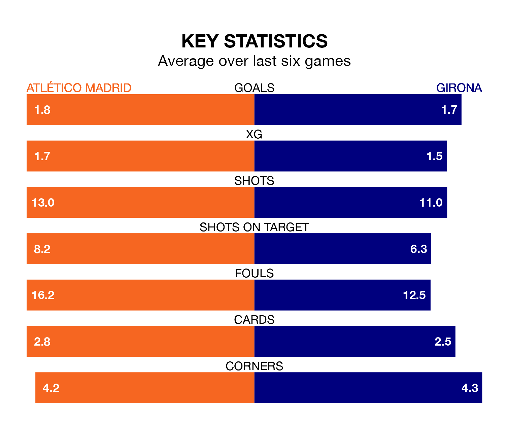

Two of La Liga's top sides face each other at the Estádio Cívitas Metropolitano in Saturday lunchtime's kick-off, when fourth-placed Atlético Madrid host third-placed Girona.
Atlético have picked up 18 wins and four draws from 30 games so far this season, and sit seven points below the visitors going into the 1pm match.
Girona, meanwhile, have won 20 and drawn five, picking up 65 points.
With 62 goals in 30 games so far this season, Girona are the league's second-highest scorers with 2.1 goals per game. And they are conceding fewer than average, letting in 36 goals at a rate of 1.2 per game.
Atlético are also above average scorers, with 1.9 goals per game, compared to a league average of 1.3. They have conceded 1.2 goals per game.
In Artem Dovbyk, the away team have the league's most on-form striker so far this season. He has notched 16 goals in 28 appearances.
His goal rate of one every 121 minutes is slightly quicker than that of Alvaro Morata, the hosts' top scorer with a goal every 125 minutes, and a total of 14 goals in 27 games.
In the last 10 years, Atlético and Girona have played each other on nine occasions. Atlético won three of them, Girona one, and they drew five times.
On average, Atlético scored 1.8 goals and Girona 1.4 in those matches.
Their last meeting was on January 3, when Girona won 4-3 at home.
Atlético are in mixed form in La Liga, with three wins and a draw from their last six games.
With three wins and three losses over that period, Girona's form is slightly worse – they have taken nine points from 18, compared to Atlético's 10.
Atlético's last match was on April 1, a 2-1 win against Villarreal, with Axel Witsel and Saúl Ñíguez getting the goals for Atlético.
Girona beat Real Betis 3-2 last time out, on March 31, with Dovbyk (two) and Cristhian Stuani on the scoresheet.
Updated: 11:20 (UTC), 09/04/24